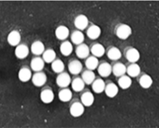
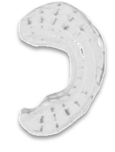
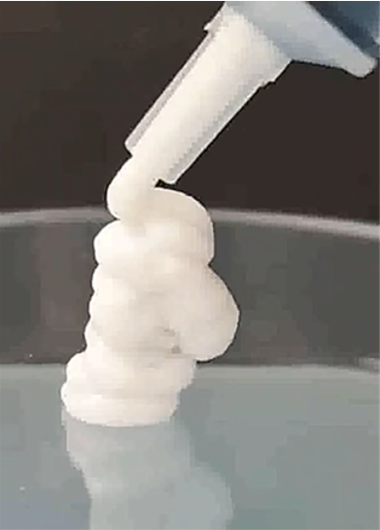

Healing motion.
Restoring moments.
움직임을 치유하고,
순간을 되찾다.
Personalized cartilage and meniscus regeneration — engineered from the operating room. 환자 맞춤형 연골·반월연골판 재생 — 수술실에서 출발한 솔루션.
- Stem-cell therapy줄기세포 치료
- Patient-specific design환자 맞춤 설계
- 3D printing3D 프린팅
Healing motion,
Restoring moments.움직임을 치유하고,
순간을 되찾다.
A knee that bends. A morning walk regained. A grandchild lifted. We help patients whose lives have been narrowed by arthritis return to the moments that matter — through one integrated regenerative platform that treats, replaces, and rebuilds damaged joint tissue. 다시 굽혀지는 무릎. 되찾은 아침 산책. 다시 안아 올리는 손주. 관절염으로 좁아진 일상을 다시 넓혀 드리는 일 — 손상된 관절 조직을 치료하고 대체하고 재생하는 하나의 재생의학 플랫폼으로 가능합니다.
Treat치료
Allogeneic stem-cell-derived cartilage cell therapy. Cell aggregates that contain cartilage extracellular matrix improve treatment efficiency. 동종 줄기세포 유래 관절연골 세포치료제. 연골 세포외기질을 함유한 세포 응집체로 치료 효율을 높입니다.
Replace대체
Bio-friendly meniscus implant designed with AI customization and produced via 3D printing — applied with precision to each patient's anatomy and damage grade. AI 맞춤 설계와 3D프린팅으로 제작된 생체친화적 반월연골판 임플란트. 환자 해부학 및 손상도에 정밀 적용됩니다.
Regenerate재생
Meniscus-derived human-tissue regenerative therapy. Retains its native components — GAG, collagen, and elastin. 반월연골판 유래 인체조직 재생치료제. 고유의 GAG, 콜라겐, 엘라스틴 등의 성분을 함유합니다.
One platform.
Three complementary therapies.하나의 플랫폼,
세 가지 상호보완 치료제.
Each product targets a distinct stage and mode of joint damage — together, they cover the full treatment spectrum from early regeneration to structural replacement. 각 제품은 관절 손상의 서로 다른 단계와 양상을 타겟합니다. 초기 재생부터 구조적 대체까지 전 치료 스펙트럼을 포괄합니다.

Carti-All
Allogeneic Wharton's-jelly-derived mesenchymal stem-cell cartilage cell therapy. Cell aggregates carrying native cartilage matrix — uniform, scalable, and surgery-ready. 동종 와튼젤리 유래 중간엽 줄기세포 기반 연골 세포치료제. 연골 세포외기질을 함유한 세포 응집체로 균일하고 양산 가능, 수술 현장에 즉시 적용됩니다.

MeniSave
Patient-specific, bio-friendly meniscus implant. AI-designed structure with layered-offset hoop-tension geometry — applied with precision to each patient's anatomy and damage grade. 환자 맞춤형 생체친화적 반월연골판 임플란트. AI 설계 구조와 layered offset 기술로 Hoop tension을 재현하며, 환자 해부학 및 손상도에 정밀 적용됩니다.

MeniFul
Meniscus-derived human-tissue regenerative therapy. Retains its native GAG, collagen, and elastin signature — a tissue-specific composition unmatched by single-collagen products. 반월연골판 유래 인체조직 재생치료제. 고유의 GAG, 콜라겐, 엘라스틴 성분을 함유하여, 단일 콜라겐 제품이 따라올 수 없는 조직 특이성을 갖습니다.
A 2.5 billion-patient market, entering inflection.전 세계 25억 환자, 임상 현실로 진입한 시장.
In 2024, the U.S. FDA recorded the first-ever approvals of a meniscus implant and an allogeneic stem-cell therapy. A decade of pent-up demand is unwinding into a real commercialization window — and Korea, with the world's highest arthritis prevalence, is our beachhead. 2024년 미국 FDA는 반월연골판 임플란트와 동종 줄기세포 치료제의 최초 승인을 기록했습니다. 10년간 축적된 수요가 본격적으로 해소되는 변곡점입니다. 국내 유병률은 세계 최고 수준으로, 전략적 초기 시장입니다.
Sources: Long et al. (2022) Arthritis & Rheumatology · Global Market Insights · Precedence Research · Grand View Research 출처: Long et al. (2022) Arthritis & Rheumatology · Global Market Insights · Precedence Research · Grand View Research
Regulation caught up with science. We're built for what comes next. 규제가 과학을 따라잡은 지금, 우리는 그 다음을 위해 설계되었습니다.
Demand was never the bottleneck — regulatory frameworks were. With FDA precedent now established for both implants and allogeneic cell therapies, the commercialization window has opened. ArthRegen's integrated stack — cells, implants, and tissue — is positioned to capture it. 병목은 수요가 아닌 규제 프레임워크였습니다. 이제 임플란트와 동종 세포치료제 모두 FDA 선례가 확립되며 상용화의 창이 열렸습니다. 세포·임플란트·조직을 아우르는 아스리젠의 통합 플랫폼이 이 기회를 선점합니다.